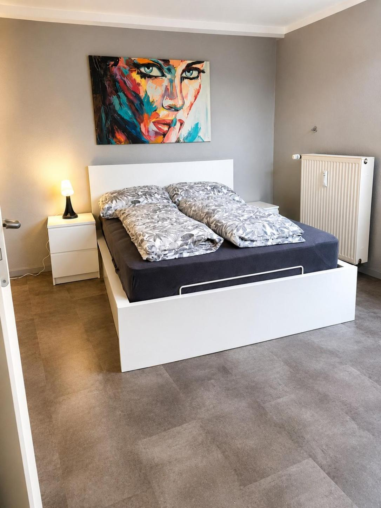
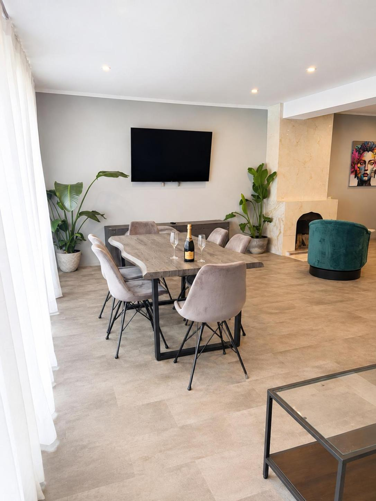

Altstadt Living
Mitten im Leben.
Raum für Ihre Zeit.
Altstadt Living und Altstadt Living Deluxe sind Ihre Adresse am Burgplatz 14. Wählen Sie zwischen 70 m² mit einem Schlafzimmer und 80 m² mit zwei Schlafzimmern – beide Apartments bieten Platz für bis zu vier Gäste.
Eine eigene Küche, ein Balkon und ein Wohnbereich machen Sie unabhängig. Vor der Tür warten die Gassen der Altstadt und das Rheinufer auf Ihren nächsten Spaziergang.
Unsere Apartments entdecken
